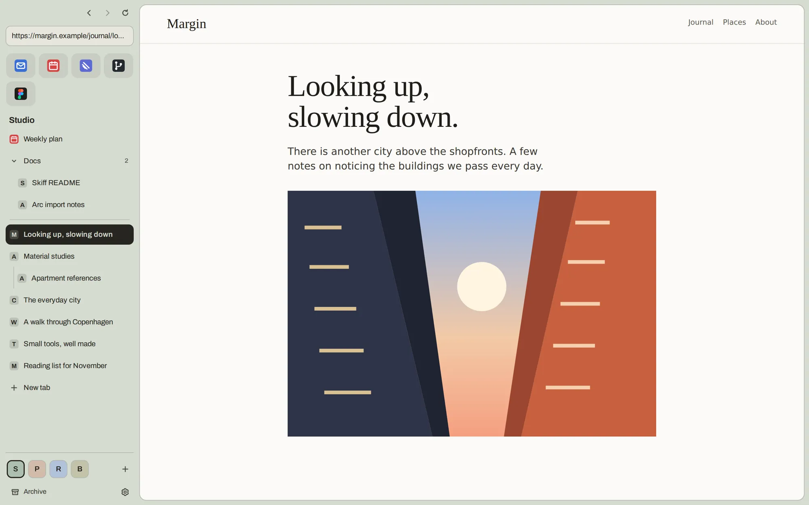
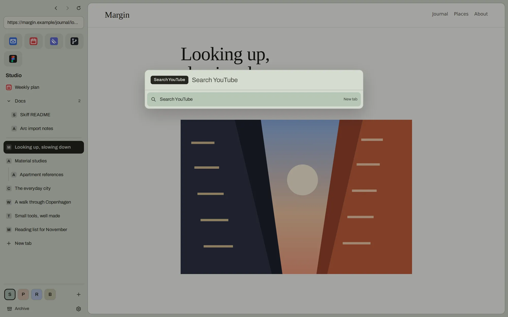
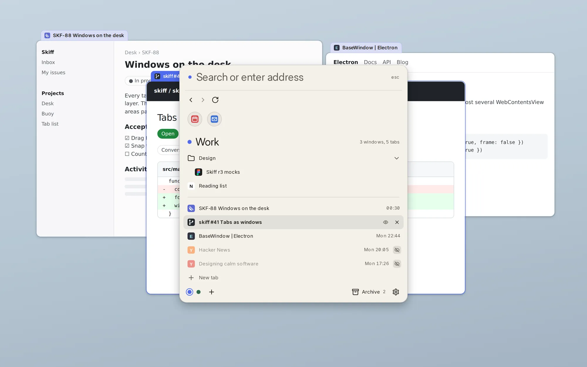

A browser you can take apart.
Spaces, vertical tabs and an archive that never loses a tab, for the Mac. Every part of the interface is a file on your disk that you can swap, edit or roll back. AI agents only touch the tabs you hand them.
Eight interfaces come in the box
Pick one. Your tabs stay open.

Sidebar The default. Favorites as icon tiles, pinned folders, tabs that nest under the page that opened them, spaces along the bottom.
29days of
Arc left
Arc stops on December 22. Your tabs don't have to.
Import your spaces, tabs, favorites, pinned folders, space colors and site icons straight from Arc's files. Saved passwords and sign-ins can come too, after you approve it on the Mac. Nothing is uploaded and nothing is written out to a plain file.
Arc's archive and space icons stay behind. Imports from other browsers aren't supported yet.
The parts you'd expect, done carefully.
Everything a tab-heavy day needs, with nothing the browser does on its own able to lose a tab for good.
A command bar that finishes your words
Type red and it fills in reddit.com. Press Tab on a site to search inside it. Open tabs from every space, known sites and archived tabs share one list.

Pin by dragging, with a preview
Drag a tab into favorites, pinned or a folder. A dashed copy shows exactly where it lands before you let go. There are no pin or star buttons.
Old tabs tidy themselves away
Tabs you haven't touched move to the archive after a delay you choose. Favorites and pinned tabs never do, and anything archived opens again from the command bar.
One private space, kept in memory
Its tabs, cookies and site data never touch the disk. Close it and they're gone.
uBlock Origin, built in
Installed from its own GitHub release on first launch and kept up to date while you browse. Its dashboard is one click away in Settings.
Links remember where they came from
A tab opened from a page nests under it, as deep as you go. Close the parent and its children move up a level.
Sync with no account
Optional and end-to-end encrypted, over your own WebDAV server or a shared folder. Cookies and passwords never sync.
The rest of the basics
Split view, reader mode, link peek, find in page, history, downloads, separate profiles, per-site zoom and permissions, and an opt-in memory saver.
Every piece is a file you own.
The sidebar, the command bar, the archive, search and layout are separate components. Change one without touching the rest.
- Copy
Make your own copy of any stock part. Stock parts keep updating; your copies are never overwritten.
- Edit
Plain HTML, CSS and JavaScript. No build step. Ask your agent to do it with Customize this.
- Preview
Check it and see it before anything changes.
- Apply or revert
Apply needs your approval of that exact revision. Revert brings back the last one, settings included.
{
"id": "stock.archive",
"version": "1.0.0",
"backend": "backend.js",
"roles": ["archive"],
"commands": { "archive": "stock.archive.run" },
"capabilities": ["storage", "call:tabs.close", "call:archive.restore", …]
}# switch the whole interface
bin/skiff ui.setShell '{"name":"timeline"}'
# open a tab in the background
bin/skiff tabs.create '{"url":"example.com","activate":false}'
# list every command the app knows
bin/skiff commands.listYour agent sees what you give it.
Ask any agent that speaks the Agent Client Protocol, from the command bar, with ⌘ J.
Claude, Codex, Gemini or your own: each runs as its own program with its own login, so there's no new AI bill and no account here. Every question opens a chat tab under the page you asked from.
- A page is sent only when you tick Include this page.
- To use the browser it needs a grant: chosen tabs or spaces, with reading and changing as separate switches.
- Revoke a grant and it stops working at once.
- Your private space is never reachable. Web pages never get the command API.
An illustration of the grant choices. Try the switches.

Or drop the window altogether.
Layer puts every tab on your desktop as its own window, with a small bar for the space. Swipe up to spread them out like Mission Control. Swipe sideways to change spaces.
When an agent opens tabs, they wait in a hidden window and never take your focus. Click one to look over its shoulder.
What it doesn't do yet.
It's an alpha. Here's the honest list before you download.
Built on Electron
Not a Chromium fork. Many Chrome extensions work, some won't, and uBlock Origin Lite can't.
Mac only
No Windows, Linux or phone app.
No account, no hosted sync
Sync goes through your own server or folder, or not at all.
Imports from Arc only
Chrome, Safari and the rest aren't supported yet.
Passwords are basic
Imported passwords fill when you ask. It doesn't save new ones or fill them on its own.
Still being checked
Some things are tested on Linux but not yet on every Mac setup. Expect bugs and tell us.
No app icon
Not yet.
No name
Untitled Browser is a placeholder. The app you download is called Skiff for now.